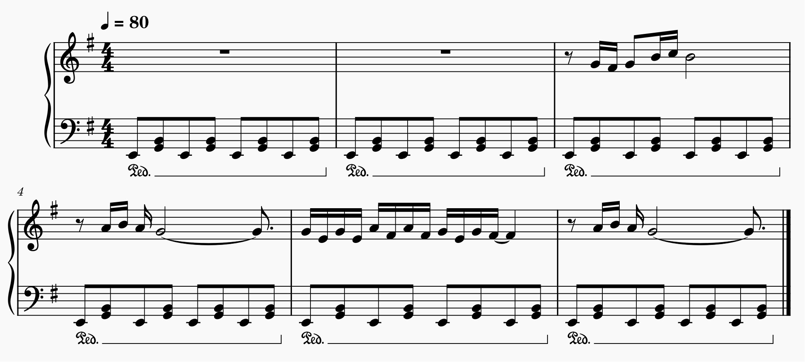
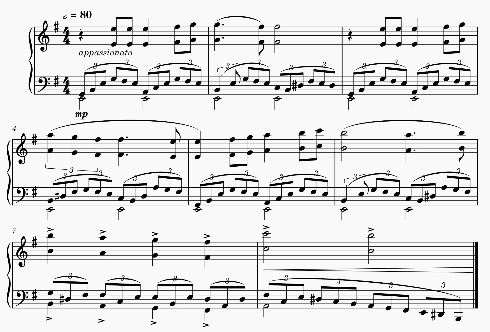

Above is the navbar of my new organization of topics, but I'm keeping the one below so you can access my new changes
of this week because I am not done updating all the links for the new organization of topics. So don't click on the links above
because they are all wrong! (please let me know if this was more what you expected).
Also some links might not work yet in my pages because there are so many to update, but it will be fixed soon :)
I am a self-taught classical composer. I am also passionate about learning how we learn. How do these two topics relate to each other? Read on to find out!
Learning is change (lecture 2). Different learning theories have different opinions on what kind of change occurs during learning. For instance, behaviourists claim that learning is a visible change in behaviour, while cognitivists would say that learning is a change in your mental processes. On the other hand, social cognitivists would argue that learning is a change of interactions with others and the environment.
In my experience composing, I can track my learning and improvement in my compositions by comparing the complexity of my previous works with my current ones. This can be complexity in terms of how detailed the melody or accompaniement are, what kinds of effects I am able to create, the complexity of the rhythms, etc. Below is a snippet of a piano melody I came up with in high school. It is quite simple since the accompaniment is exactly the same throughout all the measures, and there aren't any tonality or dynamic contrasts.
In comparison, this is a part of a piece I wrote two years ago. The accompaniment is much more complex since, there is some kind of upwards progression in the first notes of each slurred group of triplets, as well as 3 against 2 polyrhythm (eighth notes vs triplets). I have also learnt the importance of articulations, dynamic and expression markings which help me convey emotions more effectively. In this sense, it shows that throughout many years, I have learnt different aspects of composing that are essential to conveying my ideas to creating expressive music.
By paying attention to techniques from some composers, I was able to gain more knowledge about tricks and strategies I can use to convey my ideas. The examples shown above are like a display of behaviour that attest to the fact that I have indeed learned how to be a better composer.